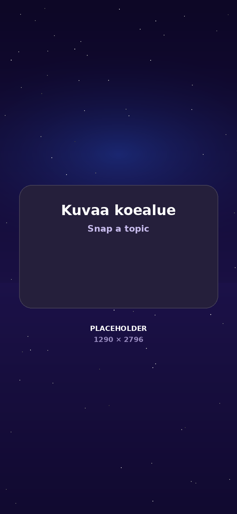
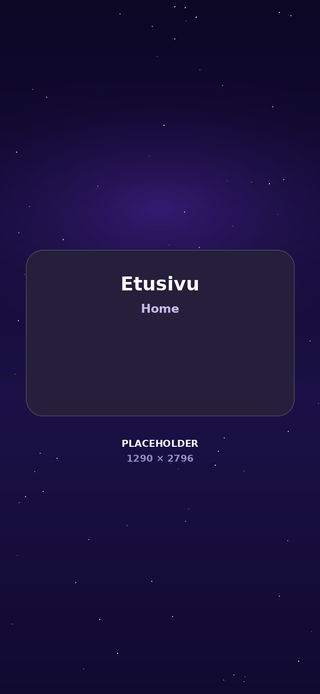
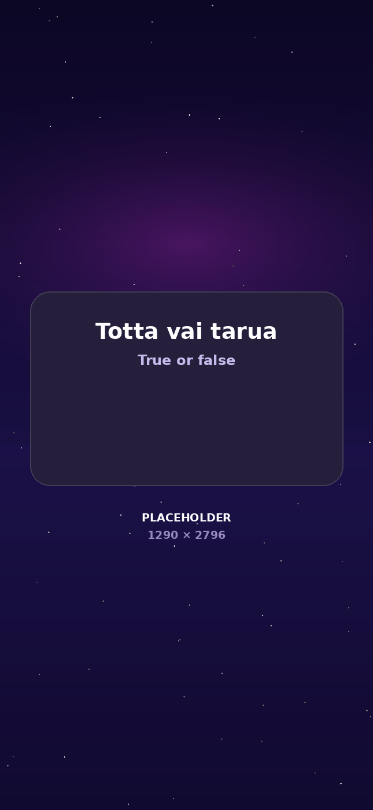
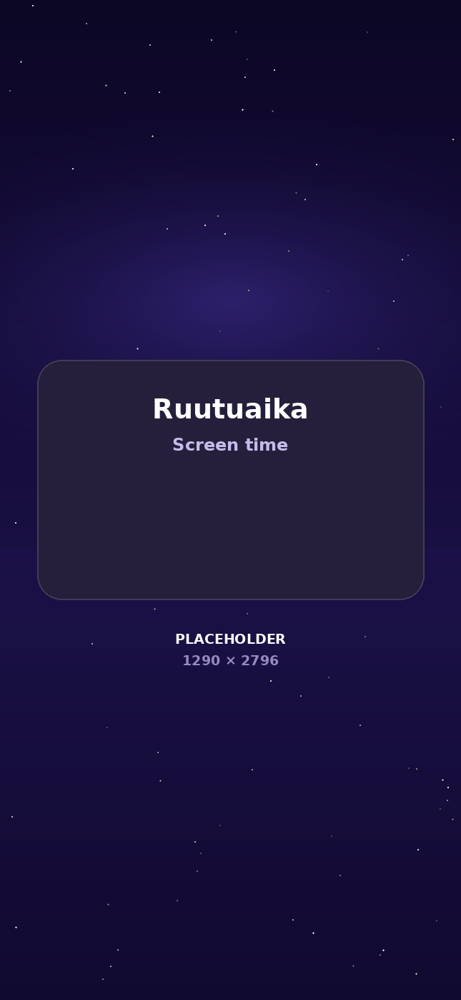
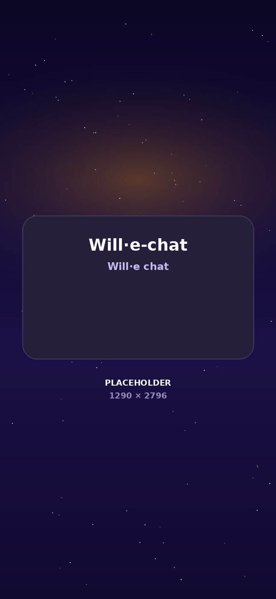
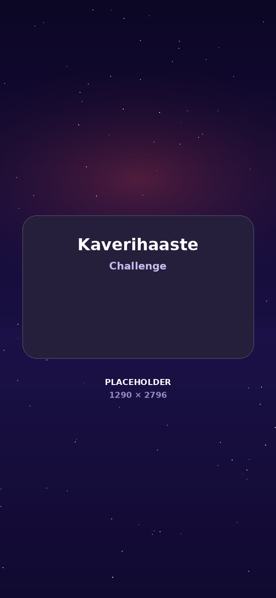
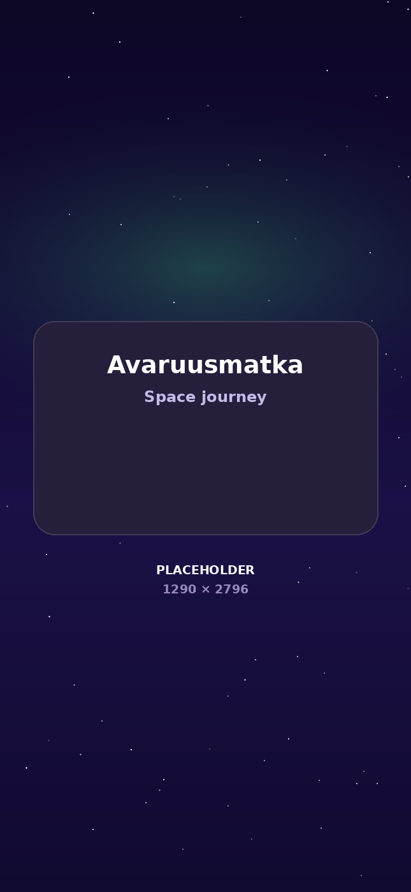

Muuta läksyt ja kokeethetkessä peliksi
Ota kuvia tai tuo PDF, Word-tiedosto. Will·e lukee sisällön ja tekee siitä harjoituskysymyksiä hetkessä.

Will·e muuttaa pelaamisen opiskeluksi ja opiskelun hauskaksi pelaamiseksi
Julkaisu syksyllä 2026.

Ota kuvia tai tuo PDF, Word-tiedosto. Will·e lukee sisällön ja tekee siitä harjoituskysymyksiä hetkessä.

Nopea peli, joka ei tunnu läksyltä.

Will·e pitää valitut sovellukset kiinni, kunnes harjoittelu on tehty. Vanhempi valitsee sovellukset, lapsi avaa ne itse opiskelemalla.

Sinulla on käytössäsi oma opettaja aina kun tarvitset juttukaveria tai apua läksyissä

Sama kymmenen kysymyksen sarja molemmille. Kaverin lähettämään haasteeseen voi vastata aina ilmaiseksi, myös ilman tilausta.

Jokainen harjoituskerta vie eteenpäin. Kolikot, arvoasteikko ja voittoputki tekevät kertaamisesta jotain, mitä haluat jatkaa huomennakin.

Will·e on turvallinen ja suunniteltu alusta lähtien peruskouluikäisille, ja se näkyy jokaisessa ratkaisussa.
Sovelluksessa ei ole mainoksia eikä ulkopuolisia seurantatyökaluja. Tietoja ei myydä eteenpäin.
Kaverit ja Will·e keskustelu aukeavat vasta kun vanhempi on antanut luvan. Yksin voit kuitenkin opiskella heti.
Koealueen kuvia ei tallenneta palvelimelle, ja keskusteluhistoria pysyy vain lapsen laitteessa.
GDPR ja COPPA on huomioitu alusta asti. App Storen ikäraja on 4+.
Tekoäly voi tehdä virheitä — Will·e on harjoittelun apuväline, ja tärkeät tiedot kannattaa tarkistaa opettajalta. App Lock hyödyntää iOS:n ruutuaikarajoituksia, eikä sitä ole tarkoitettu ainoaksi lapsilukoksi. Lue tietosuojaseloste ja käyttöehdot.
Will·e Pro
12,99 € / kk tai 89,99 € / v
Tutkimus taustalla
Harvardin yliopistossa tehdyssä satunnaistetussa vertailukokeessa opiskelijat oppivat tekoälyopettajan kanssa yli kaksi kertaa enemmän ja lyhyemmässä ajassa kuin luokkahuoneen aktiivisessa opetuksessa. He kokivat myös olevansa motivoituneempia.
Koe tehtiin 194 yliopisto-opiskelijalle fysiikan kurssilla, eikä siinä tutkittu Will·eä. Will·e on rakennettu samalle periaatteelle: tekoäly, joka on suunniteltu opettamaan eikä vain vastaamaan.
Kestin, Miller, Klales, Milbourne & Ponti (2025). AI tutoring outperforms in-class active learning. Scientific Reports 15, 17458.